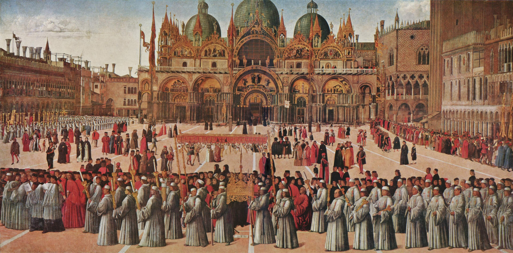

Extant art evidence
- Worn by
- Men
- Regions
- All Italian regions
In public scenes, cloaks and robes can overlap visually, so check the drape and fastening.
Citation: Gentile Bellini, Procession in St. Mark’s Square, Venice, 1496. Public domain reproduction via Wikimedia Commons.